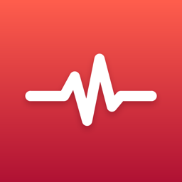

只有在你同意之後才會讀取。你可以隨時在 iPhone 的「設定」→「健康」→「資料取用權限與裝置」→ PulseRep 調整或撤銷。
| 資料 | 用途 |
|---|---|
| 心率 | 對到每一組，算出強度分布、最喘的動作、組後恢復，以及休息時建議的開始門檻 |
| 靜止心率 | 計算心率儲備，判斷每一組的強度 |
| 心率變異（SDNN）、睡眠 | 跟你自己近期的基準比較，顯示今天的身體狀態 |
| 體能訓練、活動能量 | 顯示訓練的時間與消耗 |
| 出生日期 | 估算最大心率，並確認你已滿 18 歲 |
每次訓練結束後，寫入一筆「傳統重量訓練」體能訓練和活動能量；用 Apple Watch 記錄時，也會寫入訓練中的心率。
健康篩檢的答案只用來調整建議和心率分析，例如服用影響心率的藥物時改用自覺強度，不會分享給任何人。
如果你透過 TestFlight 使用測試版，Apple 可能會收集當機報告和你主動送出的意見回饋，並提供給開發者，用途是修正問題。這部分適用 Apple 的 TestFlight 隱私權政策。
PulseRep 供 18 歲以上的人使用。我們不會在知情的情況下處理未滿 18 歲者的資料。
PulseRep 不提供診斷、治療或疾病預防。心率分析只是訓練參考；若有心臟方面的疾病、運動時曾胸痛或頭暈，請先詢問醫師。
之後如果加入帳號、雲端同步、分享給教練或 AI 摘要等需要把資料傳出裝置的功能，我們會先更新這份政策，並在 App 內說明、取得你的同意後才開始。這一頁會標示最新的生效日期。